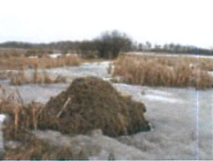

Early in spring, listen for the chorus of "Frog courtship". Later in the spring, watch as the next generation of Canada geese leaves the nest. Birdsongs fill the crisp morning air, clouds of adult  caddisflies emerge from their aquatic nursery, a muskrat slices through the water... there is always something new.
The strip of land between your feet and the water's edge is the riparian area - a vital link between water and land. Riparian zones reduce erosion, funnel nutrients to aquatic ecosystems, and provide wildlife habitat and travel corridors. Can you see any animal tracks leading to and from the lake?
Notice the arrangement of the vegetation surrounding the open water. Cattails and rushes occupy the wettest places; next to them willows and alders, and some tamarack. Then where it is drier, the trembling aspen and white spruce appear.
At the next stop you will encounter one of nature's enigmas - an organism that is a relationship.